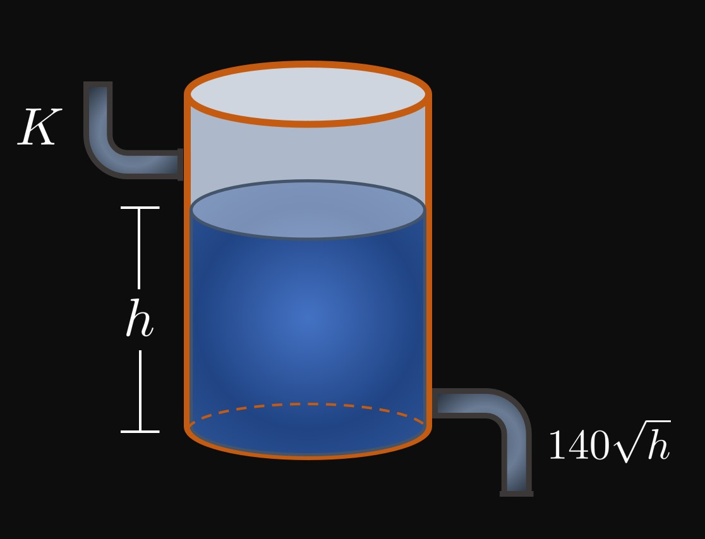

The standard form of a first-order linear differential equation is
\[y' + P(x) y = Q(x) \pd\]
Find an expression for an integrating factor, \(\mu(x).\)
How do we use this function?
For each of exercises 2–9, use an integrating factor to solve the differential equation.
A ball of mass \(m\) is dropped from rest.
Let \(v(t)\) be the ball's velocity at any time \(t.\)
The ball experiences two forces: gravitational force and drag force.
Gravitational force is \(mg,\) where \(g\) is the acceleration due to gravity.
Drag force is \(bv(t),\) where \(b\) is a drag coefficient.
Newton's Second Law gives a differential equation for the ball's velocity to be
\[m \deriv{v}{t} + bv(t) = mg \pd\]
Using an integrating factor, show that
\[v(t) = \frac{mg}{b} \par{1 - e^{-bt/m}} \pd\]
Terminal velocity, \(v_T,\)
is the maximum velocity of the ball.
Show that \(v_T = mg/b.\)

Water is pumped into a cylindrical water tank at a constant rate of \(K\) \(\undiv{cm}{sec},\)
and by Torricelli's Law water flows out of the tank at a rate of \(140 \sqrt{h}\) \(\undiv{cm}{sec},\)
where \(h\) is the tank's water level in centimeters (Figure 1).
The differential equation for the water level in the tank is therefore
\[\deriv{h}{t} = K - 140 \sqrt h \pd\]
The tank's initial water level is \(50 \un{cm},\)
and after \(60\) seconds the water level is \(20 \un{cm}.\)
Find \(h(t),\) the water level in the tank at time \(t.\)
A Bernoulli differential equation is of the form
\[\deriv{y}{x} + P(x) y = Q(x) y^n \pd\]
To solve this differential equation,
we first rewrite the equation by substituting \(y = u^{1/(1 - n)}.\)
Use this method to solve
\[\deriv{y}{x} + \frac{1}{x} y = 2x y^3 \pd\]